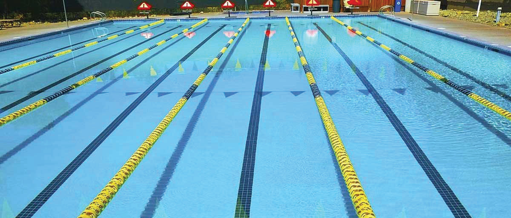

Swimming facilities and equipment
Swimming requires designated facilities and equipment for training and competition. These facilities and equipment provide an avenue for a smooth and enjoyable experience for swimmers of all levels.
Swimming facilities
The essential swimming facilities include swimming pools and open waters.
Swimming pool
A swimming pool is a man-made structure designed to hold water for swimming, diving, and other recreational and competitive water-based activities, Figure 3.1. It provides a structured and controlled environment that ensures safety, accessibility, and efficiency for swimmers of all levels. Swimming pools are classified according to their intended use. Recreational pools, typically located in homes, hotels, and resorts, are designed for leisure. Training pools, found in schools and sports facilities, are used to develop swimming skills. Competitive pools are built to meet national and international standards and are used for professional swimming competitions.
Competitive pools are further classified into short course pools (25 m), used for national and club-level competitions and long course (Olympic-size) pools (50 m), designated for international tournaments such as the Olympics and World Championships. A swimming pool has depth variations to accommodate different skill levels, lane markings for guidance during swimming, starting blocks for competitive race starts, as well as filtration and chlorination systems that maintain water quality and hygiene. These elements collectively contribute to an optimal swimming environment, facilitating both skill development and professional performance.
